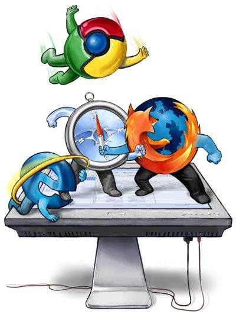

GUERRA DE BROWSERS 
Cerca de 1994, aparecía Netscape Navigator, un navegador creado desde cero por algunos de los fundadores de Mosaic. Mozilla: El nombre se originó de la unión de «Mosaic» y «killer», además de su sonoridad similar a «Godzilla», ya que el objetivo de Netscape era «destruir» Mosaic, que era el navegador más utilizado del momento. Mozilla era la mascota de Netscape, un lagarto originalmente verde y morado (que posteriormente se volvería rojo). Con el tiempo, Netscape acabaría siendo el navegador más utilizado, reemplazando a Mosaic que terminaría por abandonarse su desarrollo.
Internet Explorer hacía su aparición por esa época, basándose en el código de una versión comercial de Mosaic, perteneciente a una empresa llamada Spyglass, e incluyéndolo de serie en el sistema operativo Windows para intentar competir contra Netscape (y evitar pagar derechos). Es entonces cuando empezaría la era de las guerras entre navegadores, concretamente entre Netscape Navigator e Internet Explorer
Netscape e Internet Explorer pasaron un tiempo dándole prioridad a introducir nuevas características o funcionalidades (y tener más que su rival) que a corregir errores, con lo que crearon una gran cantidad de problemas a los usuarios y webmasters que casi siempre debían crear una versión de la web para cada navegador o decidir por hacer solo una y acabar colocando el texto «Se ve mejor utilizando Internet Explorer» o «Se ve mejor utilizando Netscape», según la preferencia del creador de la web.
Debido a esta guerra entre navegadores, muchos sitios web acababan salpicados, y terminaban analizando la identificación del navegador del usuario antes de mostrar la página. Netscape era el navegador predominante, por lo que Microsoft estaba en una posición de desventaja.
Tras varios años de desarrollo, Internet Explorer 5 se adelanta a Netscape 5 (el cuál se retrasó demasiado y nunca llegó a salir) sacando novedades y características que llaman la atención de los usuarios. Internet Explorer había resultado vencedor, terminando con Netscape y amenazando con quedarse con una gran cuota de mercado
Aunque más tarde Netscape sacaría algunas versiones más, el retraso de su quinta versión le hizo perder mucha popularidad y nunca llegaría a ser el mismo. Terminó liberando el código de su inacabada versión 5 y permitiendo el nacimiento de la Fundación Mozilla, la cuál retomaría su desarrollo, reescribiendo el código y creando un nuevo navegador llamado Mozilla Application Suite.
Mozilla Application Suite tomó un rumbo incierto, por lo que se creó una rama experimental de donde surgió Mozilla Firefox y los desarrolladores tenían más libertad. Por su parte, el primero de ellos terminaría abandonándose y pasando a ser llevado por la comunidad con el nombre de SeaMonkey, mientras que el segundo surge con mucha fuerza y un eslogan «resurgiendo de sus cenizas».
Firefox tuvo muy mala suerte en sus inicios, antes de su lanzamiento oficial. Al principio, su nombre era Mozilla Phoenix, despues cambiaron a Mozilla Firebird y finalmente se quedaron con Mozilla Firefox
Con Firefox surge una nueva guerra que hace mucho daño a Internet Explorer, el cuál se había dejado dormir en los laureles, abandonando su Internet Explorer 6 que se había quedado obsoleto en funcionalidades y características, con muchísimos errores sin corregir y que Mozilla Firefox superaba con creces. Desde características básicas como las pestañas en el navegador, a la velocidad del mismo o el buen rendimiento de su motor interno de renderizado de páginas.
Microsoft decide actualizar Internet Explorer sólo cuando ve que Mozilla Firefox está funcionando tan bien que podría llegar a amenazar su situación predominante.
Sobre el año 1996, nace Konqueror, un navegador que forma parte del proyecto KDE, uno de los entornos de escritorio de GNU/Linux más famosos. Este navegador utilizaba el motor Javascript KJS y el motor de renderizado KHTML, por el cuál se interesaría Steve Jobs algunos años más tarde con el objetivo de crear Safari, su propio navegador web nativo para los Mac de Apple.
En 2002, Apple se basó en el motor KHTML para crear un nuevo motor de renderizado llamado Webkit, que sería el núcleo que utilizaría su nuevo navegador Safari. Aunque comenzó como un producto interno de Apple, en 2005 sería liberado como software libre, convirtiéndolo en uno de los principales y más actuales motores del panorama web que más tarde daría paso a nuevos motores y navegadores.
Un poco más tarde, en 2008, Google lanzaría su propio navegador: Chrome. Un éxito rotundo que desbancaría incluso a la tendencia al alza de Firefox como navegador favorito por la mayoría de los usuarios y cada vez más próximo de relevar el liderazgo de Internet Explorer.
Opera comenzó en 1995 como un navegador de pago, cosa que cambió en su versión 5 introduciendo una versión gratuita que se financiaba utilizando publicidad. Algunas funcionalidades novedosas aumentaron su popularidad por esta época, como la utilización de gestos de ratón para realizar acciones, uno de los primeros navegadores en integrar pestañas o su velocidad respecto a otros navegadores.
Actualmente, Firefox lucha contra el todopoderoso Chrome para intentar conseguir más cuota de mercado, Safari aumenta lentamente, apoyado en el incremento de cuota de dispositivos Apple, mientras Internet Explorer cae en picado siendo cada vez